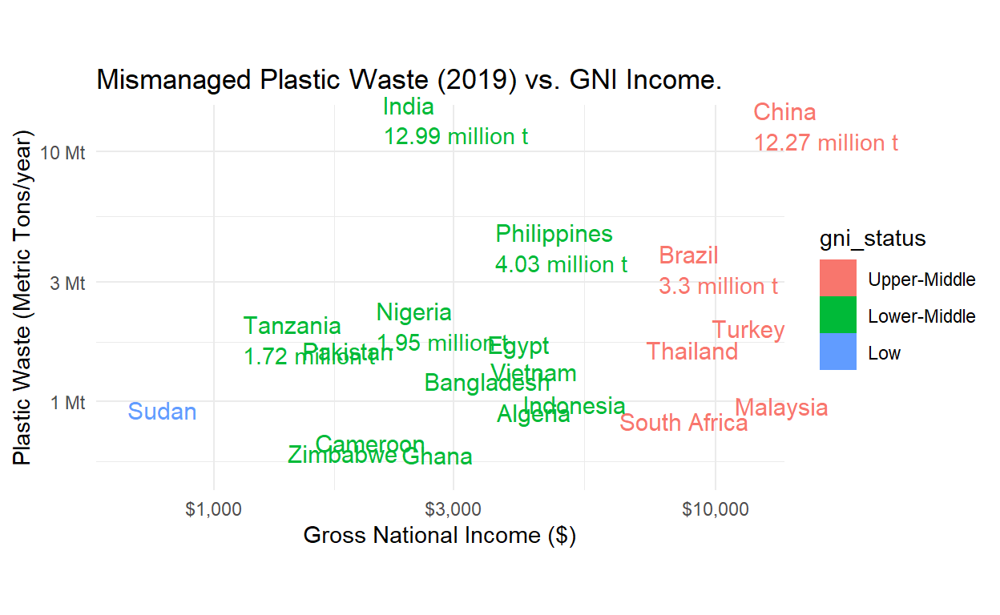
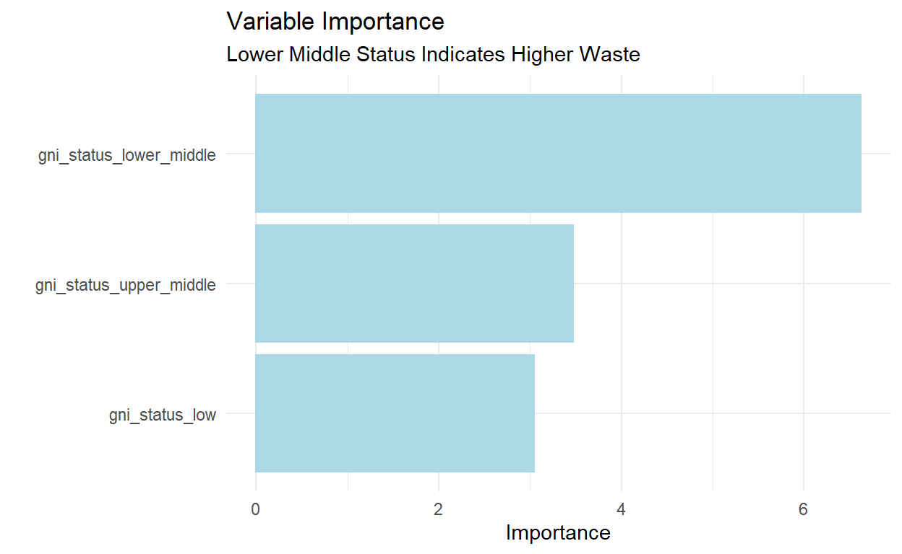

In this post we will reference analysis done on 20 countries that produce and most mismanaged waste based on their GNI income status in R.
In this post we will be working through some analysis posted here analyzing 20 different countries that produce mismanaged waste based on their GNI income status.
First we want to get a list of dataframes from the wikipedia website
for Gross National Income. After some recon, one can
readily identify that each table has the class table and
subclass wikitable, which is ad-joined to become
table.wikitable in CSS language.
The data is available here.
library(tidyverse)
library(tidymodels)
library(janitor)
library(rvest)
library(scales)
# library(bbplot)
library(vip)
#Scraping the GNI data set
url <- "https://en.wikipedia.org/wiki/List_of_countries_by_GNI_(nominal)_per_capita"
list_html <-
read_html(url) %>% #scraping the interested web page
rvest::html_elements("table.wikitable") %>% # takes the tables we want
rvest::html_table()
list_html[[1]]
# A tibble: 36 x 4
Rank Country `GNI per capita (US$)[1]` Year
<chr> <chr> <chr> <int>
1 — Bermuda (UK) 116,540 2021
2 1 Liechtenstein 116,440 2009
3 2 Switzerland 90,360 2021
4 3 Norway 84,090 2021
5 — Isle of Man (UK) 83,920 2019
6 4 Luxembourg 81,110 2020
7 5 Ireland 74,520 2021
8 6 United States 70,430 2021
9 7 Denmark 68,110 2021
10 — Channel Islands (UK) 66,220 2007
# ... with 26 more rows
# i Use `print(n = ...)` to see more rows
[[2]]
# A tibble: 36 x 4
Rank Country `GNI per capita (US$)[1]` Year
<chr> <chr> <chr> <int>
1 30 Malta 30,560 2021
2 31 Spain 29,740 2021
3 32 Slovenia 28,240 2021
4 33 Cyprus 28,130 2021
5 — Sint Maarten (Netherlands) 27,510 2018
6 34 Bahamas 27,220 2021
7 35 Estonia 25,920 2021
8 36 Czech Republic 24,070 2021
9 37 Portugal 23,730 2021
10 — Turks and Caicos Islands (UK) 23,600 2021
# ... with 26 more rows
# i Use `print(n = ...)` to see more rows
[[3]]
# A tibble: 26 x 4
Rank Country `GNI per capita (US$)[1]` Year
<chr> <chr> <chr> <int>
1 59 Costa Rica 12,310 2021
2 — World 12,070 2021
3 60 China 11,890 2021
4 61 Russia 11,600 2021
5 62 Malaysia 10,930 2021
6 63 Mauritius 10,860 2021
7 64 Bulgaria 10,720 2021
8 65 Argentina 10,050 2021
9 66 Turkey 9,830 2021
10 67 Saint Lucia 9,680 2021
# ... with 16 more rows
# i Use `print(n = ...)` to see more rows
[[4]]
# A tibble: 27 x 4
Rank Country `GNI per capita (US$)[1]` Year
<int> <chr> <chr> <int>
1 84 Belarus 6,950 2021
2 85 Botswana 6,940 2021
3 86 Bosnia and Herzegovina 6,770 2021
4 87 Tuvalu 6,760 2021
5 88 Peru 6,520 2021
6 89 South Africa 6,440 2021
7 90 Colombia 6,160 2021
8 91 North Macedonia 6,130 2021
9 92 Albania 6,110 2021
10 93 Ecuador 5,930 2021
# ... with 17 more rows
# i Use `print(n = ...)` to see more rows
[[5]]
# A tibble: 26 x 4
Rank Country GNI per capita (US$)[1~1 Year
<int> <chr> <chr> <int>
1 111 Palestine 4,220 2021
2 112 El Salvador 4,140 2021
3 112 Indonesia 4,140 2021
4 114 Ukraine 4,120 2021
5 115 Federated States of Micronesia 3,880 2021
6 116 Samoa 3,860 2021
7 117 Sri Lanka 3,820 2021
8 118 Mongolia 3,760 2021
9 119 Eswatini 3,680 2021
10 120 Algeria 3,660 2021
# ... with 16 more rows, and abbreviated variable name
# 1: `GNI per capita (US$)[1]`
# i Use `print(n = ...)` to see more rows
[[6]]
# A tibble: 28 x 4
Rank Country `GNI per capita (US$)[1]` Year
<int> <chr> <chr> <int>
1 137 Laos 2,520 2021
2 138 Ivory Coast 2,450 2021
3 139 Ghana 2,360 2021
4 140 Solomon Islands 2,300 2021
5 141 Sao Tome and Principe 2,280 2021
6 142 India 2,170 2021
7 143 Nigeria 2,100 2021
8 144 Nicaragua 2,010 2021
9 144 Kenya 2,010 2021
10 146 Uzbekistan 1,960 2021
# ... with 18 more rows
# i Use `print(n = ...)` to see more rows
[[7]]
# A tibble: 13 x 4
Rank Country `GNI per capita (US$)[1]` Year
<int> <chr> <chr> <int>
1 165 South Sudan 1,090 2015
2 166 Zambia 1,040 2021
3 167 Guinea 1,010 2021
4 168 Togo 980 2021
5 169 Ethiopia 960 2021
6 170 Syria 930 2018
7 171 Mali 870 2021
8 172 Burkina Faso 860 2021
9 173 Rwanda 850 2021
10 174 Uganda 840 2021
11 175 The Gambia 800 2021
12 176 Guinea-Bissau 780 2021
13 177 Yemen 670 2020
[[8]]
# A tibble: 14 x 4
Rank Country GNI per capita (US$)~1 Year
<int> <chr> <int> <int>
1 177 Sudan 670 2021
2 179 Chad 650 2021
3 180 Malawi 630 2021
4 181 Liberia 620 2021
5 182 Eritrea 600 2011
6 183 Niger 590 2021
7 184 Democratic Republic of the Congo 580 2021
8 185 Central African Republic 530 2021
9 186 Sierra Leone 510 2021
10 187 Madagascar 500 2021
11 187 Afghanistan 500 2020
12 189 Mozambique 480 2021
13 190 Somalia 450 2021
14 191 Burundi 240 2021
# ... with abbreviated variable name 1: `GNI per capita (US$)[1]`
[[9]]
# A tibble: 16 x 5
`High-income group` High-income~1 High-~2 High-~3 High-~4
<chr> <chr> <chr> <chr> <chr>
1 British Virgin Islands (UK) <NA> <NA> <NA> <NA>
2 Cook Islands (New Zealand) <NA> <NA> <NA> <NA>
3 Faroe Islands (Denmark) <NA> <NA> <NA> <NA>
4 Gibraltar (UK) <NA> <NA> <NA> <NA>
5 Guam (US) <NA> <NA> <NA> <NA>
6 Monaco <NA> <NA> <NA> <NA>
7 Northern Mariana Islands (US) <NA> <NA> <NA> <NA>
8 Saint Martin (France) <NA> <NA> <NA> <NA>
9 San Marino <NA> <NA> <NA> <NA>
10 Taiwan <NA> <NA> <NA> <NA>
11 U.S. Virgin Islands (US) <NA> <NA> <NA> <NA>
12 Upper-middle-income group Upper-middle~ Upper-~ Upper-~ Upper-~
13 American Samoa (US) <NA> <NA> <NA> <NA>
14 Venezuela <NA> <NA> <NA> <NA>
15 Low-income group Low-income g~ Low-in~ Low-in~ Low-in~
16 North Korea <NA> <NA> <NA> <NA>
# ... with abbreviated variable names 1: `High-income group`,
# 2: `High-income group`, 3: `High-income group`,
# 4: `High-income group`Next we will use the magic of the purrr package to flow
our categories through each dataframe using the map
function. Then we will flow the list of updated datafarmes into the
rbind function with a do.call. Finally we
“consistentize” the columns using janitor’s
clean_names function. Last we will select, rename, and
mutate columns as needed to get a nice clean wiki scraped data
frame.
#gni income levels vector
status <- c("high","high","upper_middle","upper_middle",
"lower_middle","lower_middle","low","low")
#Building and tidying GNI dataframe
df_gni =
#assigning the gni income levels to the corresponding countries
purrr::map(1:8, function(x){
list_html[[x]] %>%
dplyr::mutate(gni_status=status[x])
}) %>%
do.call(what=rbind) %>%
janitor::clean_names() %>%
dplyr::mutate(gni_status = forcats::as_factor(gni_status)) %>%
dplyr::select(country,
gni_metric=gni_per_capita_us_1, # renames
gni_status) %>%
dplyr::mutate(gni_metric = stringr::str_remove(gni_metric,",") %>% as.numeric())
df_gni# A tibble: 206 x 3
country gni_metric gni_status
<chr> <dbl> <fct>
1 Bermuda (UK) 116540 high
2 Liechtenstein 116440 high
3 Switzerland 90360 high
4 Norway 84090 high
5 Isle of Man (UK) 83920 high
6 Luxembourg 81110 high
7 Ireland 74520 high
8 United States 70430 high
9 Denmark 68110 high
10 Channel Islands (UK) 66220 high
# ... with 196 more rows
# i Use `print(n = ...)` to see more rowsHow many countries do we know GNI on?
At this point we know information about about 206 countries, their gross national income, and their gni_status of high, mid, or low. Now we want to collect data on waste by country. This is available here.
First we get the raw dataframe using the consistentcy of
readr::read_csv. Next we “consistentize” the
column names, drop missing rows, and rename to match our GNI
dataframe.
#Building and tidying waste dataframe
df_waste <- readr::read_csv("https://raw.githubusercontent.com/mesdi/plastic-pollution/main/plastic-waste-mismanaged.csv")
df_waste =
df_waste %>%
janitor::clean_names() %>%
tidyr::drop_na() %>%
select(country=entity,
waste_metric=mismanaged_plastic_waste_metric_tons_year_1)
df_waste# A tibble: 160 x 2
country waste_metric
<chr> <dbl>
1 Albania 69833
2 Algeria 764578
3 Angola 236946
4 Antigua and Barbuda 627
5 Argentina 465808
6 Australia 5266
7 Bahamas 2212
8 Bahrain 1043
9 Bangladesh 1021990
10 Barbados 872
# ... with 150 more rows
# i Use `print(n = ...)` to see more rowsHow many countries do we have waste info on?
Now we want to unify the data to speak about GNI and waste.
First we will left_join the df_waste with the
df_gni. Then only keep unique countries (equivalent to
remove_duplicates in dplyr), filter out the world country, and drop
missing rows again that the df_gni had as country names,
but df_waste did not. This implicitly gives precendence to
the df_waste data. This is no different than doing an
inner_join where it will just drop those non-matches
anyway. The left_join provides the benefit of axamining
which, and how many, rows were not matched in the join. Not a bad idea
to just do, then filter.
#Binding waste and gni dataframes by country
df_tidy =
df_waste %>%
dplyr::left_join(df_gni) %>%
dplyr::distinct(country, .keep_all = TRUE) %>% # remove duplicate countries
dplyr::filter(!country == "World") %>%
tidyr::drop_na()
df_tidy# A tibble: 142 x 4
country waste_metric gni_metric gni_status
<chr> <dbl> <dbl> <fct>
1 Albania 69833 6110 upper_middle
2 Algeria 764578 3660 lower_middle
3 Angola 236946 1770 lower_middle
4 Antigua and Barbuda 627 14900 high
5 Argentina 465808 10050 upper_middle
6 Australia 5266 56760 high
7 Bahamas 2212 27220 high
8 Bahrain 1043 19930 high
9 Bangladesh 1021990 2620 lower_middle
10 Barbados 872 16720 high
# ... with 132 more rows
# i Use `print(n = ...)` to see more rowsNext identify the 6 worst counties with
mismanaged_plastic_waste_metric_tons_year_1, which we renamed
waste_metric. The slice_max function is
incredible here. It will take your dataframe, let you select a column to
order by, then do a max operation and cut it off by some n,
effectively leaving you with the top_k or the
slice_max of the column ordered by something you care
about. This is great for quick assessments like:
df_tidy %>%
dplyr::slice_max(order_by = gni_metric, n = 6) %>%
dplyr::select(country, gni_metric) %>%
dplyr::mutate(gni_metric_label = paste0(round(gni_metric/1000, 2), " thousand"))# A tibble: 6 x 3
country gni_metric gni_metric_label
<chr> <dbl> <chr>
1 Norway 84090 84.09 thousand
2 Ireland 74520 74.52 thousand
3 United States 70430 70.43 thousand
4 Denmark 68110 68.11 thousand
5 Iceland 64410 64.41 thousand
6 Singapore 64010 64.01 thousand df_tidy %>%
dplyr::mutate(gni_to_waste = gni_metric / waste_metric) %>%
dplyr::slice_max(order_by = gni_to_waste, n=20) %>%
dplyr::select(country, gni_to_waste)# A tibble: 20 x 2
country gni_to_waste
<chr> <dbl>
1 Montenegro 581.
2 Iceland 427.
3 Seychelles 402.
4 Marshall Islands 316.
5 Saint Kitts and Nevis 191.
6 Denmark 175.
7 Maldives 140
8 Palau 124.
9 Malta 118.
10 Norway 56.3
11 Brunei 45.5
12 Estonia 43.2
13 Kiribati 39.3
14 Qatar 37.3
15 Mauritius 36.3
16 Cyprus 33.6
17 Slovenia 33.5
18 Ireland 27.9
19 New Zealand 26.5
20 Singapore 25.9#Top 6 countries in terms of the amounts of mismanaged plastic waste
df_6 =
df_tidy %>%
dplyr::slice_max(order_by = waste_metric, n=6) %>%
dplyr::mutate(waste = paste0(round(waste_metric/10^6, 2), " million t"))
df_6# A tibble: 6 x 5
country waste_metric gni_metric gni_status waste
<chr> <dbl> <dbl> <fct> <chr>
1 India 12994100 2170 lower_middle 12.99 million t
2 China 12272200 11890 upper_middle 12.27 million t
3 Philippines 4025300 3640 lower_middle 4.03 million t
4 Brazil 3296700 7720 upper_middle 3.3 million t
5 Nigeria 1948950 2100 lower_middle 1.95 million t
6 Tanzania 1716400 1140 lower_middle 1.72 million t df_tidy %>%
# Top 20 waste countries
dplyr::slice_max(order_by = waste_metric, n=20) %>%
# X,Y, and color variables
ggplot(aes(x=gni_metric, y=waste_metric, color=gni_status)) +
# Country names
geom_text(aes(label = country),
hjust= 0, vjust= -0.5, size=4, key_glyph= "rect") +
# Top 6 waste labels
geom_text(data = df_6, aes(x = gni_metric, y = waste_metric, label = waste),
hjust = 0, vjust=1.2) +
scale_x_log10(labels = scales::label_dollar(accuracy = 2)) +
scale_y_log10(labels = scales::label_number(scale_cut = cut_si("t"))) +
scale_color_discrete(labels = c("Upper-Middle", "Lower-Middle", "Low")) +
labs(title = "Mismanaged Plastic Waste (2019) vs. GNI Income.",
y = "Plastic Waste (Metric Tons/year)",
x = "Gross National Income ($)") +
coord_fixed(ratio = 0.5, clip = "off") +
theme_minimal()
# Remember what we're modeling
df_tidy %>% head# A tibble: 6 x 4
country waste_metric gni_metric gni_status
<chr> <dbl> <dbl> <fct>
1 Albania 69833 6110 upper_middle
2 Algeria 764578 3660 lower_middle
3 Angola 236946 1770 lower_middle
4 Antigua and Barbuda 627 14900 high
5 Argentina 465808 10050 upper_middle
6 Australia 5266 56760 high # Build a receipe
# 1. log(y)
# 2. dummies(x)
#
df_rec =
df_tidy %>%
recipes::recipe(waste_metric ~ gni_status) %>%
recipes::step_log(waste_metric, base = 10) %>%
recipes::step_dummy(gni_status)
df_recRecipe
Inputs:
role #variables
outcome 1
predictor 1
Operations:
Log transformation on waste_metric
Dummy variables from gni_status# Build a model
# 1. Linear regression
#
lm_model =
linear_reg() %>%
set_engine("lm")
lm_modelLinear Regression Model Specification (regression)
Computational engine: lm # Build workflow
# 1. Add model
# 2. Add recipe
#
lm_wflow =
workflow() %>%
add_model(lm_model) %>%
add_recipe(df_rec)
lm_wflow== Workflow ==========================================================
Preprocessor: Recipe
Model: linear_reg()
-- Preprocessor ------------------------------------------------------
2 Recipe Steps
* step_log()
* step_dummy()
-- Model -------------------------------------------------------------
Linear Regression Model Specification (regression)
Computational engine: lm # Fit the workflow with some data
lm_fit = fit(lm_wflow, df_tidy)
# Descriptive and inferential statistics
lm_fit %>%
extract_fit_engine() %>%
summary()
Call:
stats::lm(formula = ..y ~ ., data = data)
Residuals:
Min 1Q Median 3Q Max
-3.2939 -0.6246 0.1494 0.8228 2.6911
Coefficients:
Estimate Std. Error t value Pr(>|t|)
(Intercept) 3.5666 0.1595 22.359 < 2e-16 ***
gni_status_upper_middle 0.8313 0.2393 3.474 0.000685 ***
gni_status_lower_middle 1.5965 0.2410 6.625 7.15e-10 ***
gni_status_low 1.0701 0.3512 3.047 0.002768 **
---
Signif. codes: 0 '***' 0.001 '**' 0.01 '*' 0.05 '.' 0.1 ' ' 1
Residual standard error: 1.128 on 138 degrees of freedom
Multiple R-squared: 0.2471, Adjusted R-squared: 0.2307
F-statistic: 15.09 on 3 and 138 DF, p-value: 1.501e-08# ... OR ...
tidy(lm_fit)# A tibble: 4 x 5
term estimate std.error statistic p.value
<chr> <dbl> <dbl> <dbl> <dbl>
1 (Intercept) 3.57 0.160 22.4 1.01e-47
2 gni_status_upper_middle 0.831 0.239 3.47 6.85e- 4
3 gni_status_lower_middle 1.60 0.241 6.63 7.15e-10
4 gni_status_low 1.07 0.351 3.05 2.77e- 3#variable importance
lm_fit %>%
extract_fit_parsnip() %>%
vip(aesthetics = list(color = "lightblue", fill = "lightblue")) +
theme_minimal() +
ggtitle("Variable Importance", subtitle = "Lower Middle Status Indicates Higher Waste")